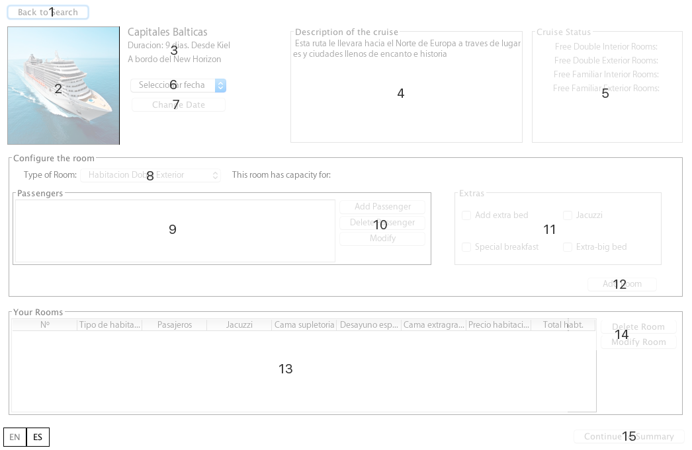
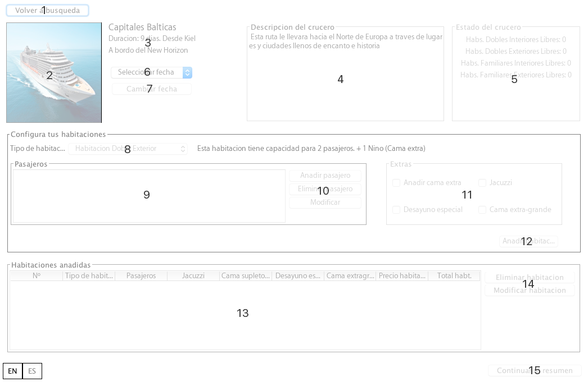

Set a reservation
On this window you can set your book, add, modify or delete
cabins, passengers and extras.
To return to the previous screen in the upper left corner you will
find a button that says "go back" (1). Remember if go back to search
again for a reservationthe rooms in the reservation
will be deleted.
Then the parts of the window are listed.

- Back to the search page.
- Image associated with the selected boat cruise.
- Short description of the cruise that includes the name,
duration and name of the boat.
- Descriptive text about the selected cruise.
- State of the cruise. It displays the number of free rooms for
each selected date (6).
- Select a date shall be the date on which performs the cruise.
Departure date.
- Once a departure date you selected this button It allows
change.
- Select the type of room inside possibilities.
- Passenger list associated with the room.
- Group of buttons for passengers. You can add, modify or
remove.
- Panel extras. All possible extras are displayed. Select those
you want.Note: The Extra beds can only be
used by children under 16 years.
- Add the room set to the reserve.Note: Every
room should have at least one older than 16 years to be added to the
reserve.
- List of rooms on the reservation.
- Advance to the screen purchase summary.

Configurar una reserva
En esta ventana podrá configurar su reserva, añadir, modificar o
eliminar camarotes, pasajeros y extras.
Para volver a la pantalla anterior, en la esquina superior izquierda
encontrará un botón que pone "vovler a búsqueda" (1). Recuerda wue si
vuelve a búsqueda durante una reserva las
habitaciones seleccionadas serán eliminadas
A continuación se detallan las distintas partes de la ventana.

- Volver a la página de búsqueda.
- Imágen del barco asociado al crucero seleccionado.
- Breve descripción del crucero que incluye la denominación, la
duración y el nombre del barco.
- Texto descriptivo sobre el crucero seleccionado.
- Estado del crucero. Muestra el número de habitaciones libres
para cada fecha seleccionada (6).
- Seleccione una fecha, será la fecha en la que realizará el
crucero. Fecha de salida.
- Una vez seleccionada una fecha de salida este botón te
permite cambiarla.
- Permite seleccionar el tipo de habitación dentro de las
posibilidades.
- Lista de pasajeros asociada a la habitación.
- Grupo de botones para pasajeros. Puede añadir, modificar o
eliminar.
- Panel de extras. Se mostrarán todos los extras posibles.
Seleccione aquellos que deseas. Nota: Las
camas extra sólo podrán ser utilizadas por niños menores de 16 años.
- Añade la habitación configurada a la reserva. Nota:
Toda habitación deberá tener al menos un mayor de 16 años para
poder ser añadida a la reserva.
- Lista de habitaciones en la reserva.
- Avance a la pantalla de resumen de compra.